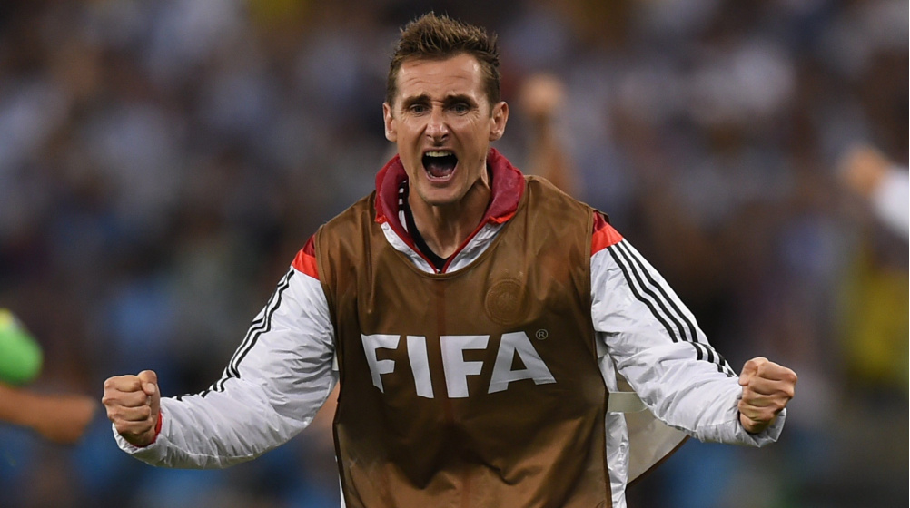
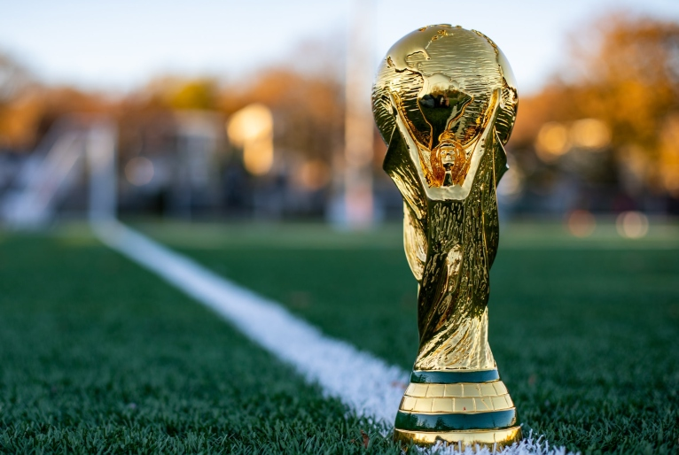

primeira copa do mundo aconteceu em 1930, no Uruguai,
onde o próprio país sede foi campeão em cima da Argentina por 4-2 dia 30/07.

Os três maiores artilheiros de todas as edições de Copa do Mundo são:
Miroslav Klose (Alemanha): 16 gols.
Ronaldo (Brasil): 15 gols.
Gerd Müller (Alemanha): 14 gols.

A maior goleada na copa do mundo desde 1930 até esse ano (2022) aconteceu em 1982,
que foi da Hungria contra El Salvador,
que aconteceu na Espanha.